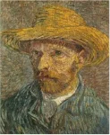
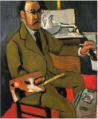
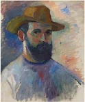

Le post impressionnisme, est un mouvement artistique qui est apparu à la fin des années 1880 jusqu’en 1910.Il s’agit d’un mouvement qui marque la fin de l’impressionnisme, un mouvement ayant atteint ces limites. Généralement les mouvement artistiques sont marqués par des caractéristiques propres à elle et cela permet de les distingué mais le post impressionnisme est différent, il n'est pas un couant artistique à proprement parler mais un constast de la fin de l'impressionnisme. Il regroupe de nouveaux styles et mouvements, un partage entre tous les artistes, c'est une vague de création nouvelle. On peut tout de même lui attribué quelque caractéristique de couleurs et de formes, en effet la palette de couleurs reste marjoritairment vive et les formes géométrique. La volonté entre l'impressionnisme et le post impressionnisme reste la même soit vouloir dépasser le réalisme et le naturalisme pour donner à l'art une vison plus large et recherché.
Du 13 avril au 23 juin 2021
La Fondation Cartier, 261 Bd Raspail,
75014 Paris
Tarifs:
Plein tarif à 11€
...

Prénom: Vincent
Nom: Van Gogh
Date de naissance:
30 mars 1853
Décès: 29 juillet 1890

Prénom: Henri
Nom: Matisse
Date de naissance:
31 mars 1869
Décès: 3 novembre 1949

Prénom: Henri
Nom: Manguin
Date de naissance:
23 mars 1874
Décès: 25 septembre 1949
Prénom: Guan
Nom: Zilan
Date de naissance:
janvier 1903
Décès: 1986